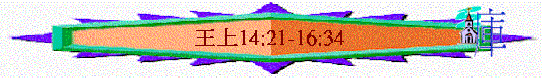

|
屬神國度的衰落 |
|||
|
二王—行神的旨意得堅固
|
二國—不專心順服終分裂
|
二先知—神能力彰顯仍剛硬
|
二結局—繼續行惡至終亡國
|
|
王上1-10 |
王上11-16 |
王上17-王下9:4 |
王下9:5-25:30 |
二.二國—不專心順服終分裂(11-16)
1.王國的分裂(11-12:24)
2.早期的北國(12:25-14:20)
3.早期的南國(14:21-15:24)
A.羅波安—行可憎惡事的王(14:21-31)
a.人的惡行
(1)沒恆久行正
「所羅門的兒子羅波安作猶大王。他登基的時候年四十一歲，在耶路撒冷，就是耶和華從以色列眾支派中所選擇立他名的城，作王十七年。羅波安的母親名叫拿瑪，是亞捫人。」14:21
「這樣，就堅固猶大國，使所羅門的兒子羅波安強盛三年，因為他們三年遵行大衛和所羅門的道。」代下11:17
「羅波安的國堅立，他強盛的時候就離棄耶和華的律法，以色列人也都隨從他。」代下12:1
～羅波安及南國百姓只是三年遵行神的道，但三年後羅波安終離棄耶和華的律法
(2)沒吸取教訓
「猶大人行耶和華眼中看為惡的事，犯罪觸動他的憤恨，比他們列祖更甚。」14:22
～羅波安與百姓沒有吸取所羅門離棄神被神奪回大部份國的教訓，行神眼中惡的事，甚至比列祖更甚，惹神發怒
(3)拜偶像行惡
「因為他們在各高岡上，各青翠樹下築壇，立柱像和木偶。國中也有孌童。猶大人效法耶和華在以色列人面前所趕出的外邦人，行一切可憎惡的事。」14:23-24
～迦南人對巴力的敬拜方式是包括獻祭和行淫，所以他們喜歡在樹蔭下築壇，既清涼又可遮醜
～「柱像」代表神祇之石柱，「木偶」即亞舍拉，迦南女神
～「孌童」即男妓
b.神的審判
(1)埃及攻擊
「羅波安王第五年，埃及王示撒上來攻取耶路撒冷，」14:25
「羅波安王第五年，埃及王示撒上來攻打耶路撒冷，因為王和民得罪了耶和華。」代下12:2
(2)寶物被奪
「奪了耶和華殿和王宮裡的寶物，盡都帶走，又奪去所羅門製造的金盾牌。羅波安王製造銅盾牌代替那金盾牌，交給守王宮門的護衛長看守。」14:26-27
B.亞比央—不誠實從神的王
a.他的惡行
(1)效法父親行惡
「尼八的兒子耶羅波安王十八年，亞比央登基作猶大王，在耶路撒冷作王三年。他母親名叫瑪迦，是押沙龍的女兒。亞比央行他父親在他以前所行的一切惡，他的心不像他祖大衛的心，誠誠實實地順服耶和華他的神。」15:1-3
～亞比央又名亞比雅，他效法父親在他以前所行的一切惡。
(2)不誠實順服神
(A)危難時—曾吹角呼求神
「耶羅波安卻在猶大人的後頭設伏兵。這樣，以色列人在猶大人的前頭，伏兵在猶大人的後頭。猶大人回頭觀看，見前後都有敵兵，就呼求耶和華，祭司也吹號。於是猶大人吶喊；猶大人吶喊的時候，神就使耶羅波安和以色列眾人敗在亞比雅與猶大人面前。以色列人在猶大人面前逃跑，神將他們交在猶大人手裡。亞比雅和他的軍兵大大殺戮以色列人，以色列人仆倒死亡的精兵有五十萬。那時，以色列人被制伏了，猶大人得勝，是因倚靠耶和華他們列祖的神。」 代下13:13-18
～代下曾記載耶羅波安有一次與亞比雅(即亞比央)爭戰，亞比雅與猶太人在危難中曾吹號呼求神的幫助，結果神使他們得勝
(B)但一生—始終不順服神
「亞比央行他父親在他以前所行的一切惡，他的心不像他祖大衛的心，誠誠實實地順服耶和華他的神。」15:3
～誠誠實實的順服可譯“fully
devoted”，可能指他一方面是尋求神，但心裡也不是全然委身敬服神，也有其它偶像
b.神的恩典
「然而耶和華他的神因大衛的緣故，仍使他在耶路撒冷有燈光，叫他兒子接續他作王，堅立耶路撒冷。因為大衛除了赫人烏利亞那件事，都是行耶和華眼中看為正的事，一生沒有違背耶和華一切所吩咐的。」15:4-5
～但神因大衛的原故，仍對大衛家施恩典，使他們的兒子可接續作王
C.亞撒—徹底除淨惡的王
a.王的善行
(1)不受行惡家庭的影響
「亞比央與他列祖同睡，葬在大衛的城裡。他兒子亞撒接續他作王。以色列王耶羅波安二十年，亞撒登基作猶大王，]在耶路撒冷作王四十一年。他祖母名叫瑪迦，是押沙龍的女兒。亞撒效法他祖大衛行耶和華眼中看為正的事，」15:8-11
～亞撒的父親—亞比央及祖母瑪迦也是行惡的，但他沒有受他們的影響，反而行神眼中看為正的事情
(2)徹底改革國內的敗壞
(A)除偶像
「從國中除去孌童，又除掉他列祖所造的一切偶像；」15:12
(B)貶惡親
「並且貶了他祖母瑪迦太后的位，因他造了可憎的偶像亞舍拉。亞撒砍下他的偶像，燒在汲淪溪邊，」15:13
(3)對神一心一意的順服
「只是邱壇還沒有廢去。亞撒一生卻向耶和華存誠實的心。亞撒將他父親所分別為聖與自己所分別為聖的金銀和器皿都奉到耶和華的殿裡。」15:14-15
～聖經題及「存誠實的心」可譯“heart
fully committed”亞撒對神的心是委身的，他也願意將自己及父親分別為聖的金銀和器皿奉到神殿裡
b.國的爭戰
(1)亞撒與巴沙爭戰
「亞撒和以色列王巴沙在世的日子常常爭戰。」15:16
～「修築」指鞏固防守設施
～亞撒和以色列常常爭戰
(2)亞撒倚靠亞蘭王
「於是亞撒將耶和華殿和王宮府庫裡所剩下的金銀都交在他臣僕手中，打發他們往住大馬色的亞蘭王希旬的孫子、他伯利們的兒子便哈達那裡去，說：「你父曾與我父立約，我與你也要立約。現在我將金銀送你為禮物，求你廢掉你與以色列王巴沙所立的約，使他離開我。」便哈達聽從亞撒王的話，派軍長去攻擊以色列的城邑；他們就攻破以雲、但、亞伯伯瑪迦、基尼烈全境、拿弗他利全境。巴沙聽見，就停工不修築拉瑪了，仍住在得撒。」15:18-21
「那時，先見哈拿尼來見猶大王亞撒，對他說：「因你仰賴亞蘭王，沒有仰賴耶和華你的神，所以亞蘭王的軍兵脫離了你的手。」代下16:7
～以色列與亞蘭原有邦交，但猶太王亞撒卻收買亞蘭王，使他攻擊巴沙，但此件事，在代下描述人仰頼外邦王卻不倚靠神是神不喜悅的
(3)國受威脅暫消除
「巴沙聽見，就停工不修築拉瑪了，仍住在得撒。於是亞撒王宣告猶大眾人，不准一個推辭，吩咐他們將巴沙修築拉瑪所用的石頭、木頭都運去，用以修築便雅憫的迦巴和米斯巴。」15:21-22
～迦巴與米斯巴分別位於拉瑪之東和西
4.紛亂的北國(15:25-16:34)
～此段記載北國很多謀朝篡位的歷史，顯示出北國的紛亂、人的惡行及神的不堅立(令王的後裔不能接續作王)
A.拿答
a.行惡
「猶大王亞撒第二年，耶羅波安的兒子拿答登基作以色列王共二年，拿答行耶和華眼中看為惡的事，行他父親所行的，犯他父親使以色列人陷在罪裡的那罪。」15:25-26
b.被殺
「以薩迦人亞希雅的兒子巴沙背叛拿答，在非利士的基比頓殺了他。那時拿答和以色列眾人正圍困基比頓。在猶大王亞撒第三年巴沙殺了他，篡了他的位。」15:27-28
c.應驗
「巴沙一作王就殺了耶羅波安的全家，凡有氣息的沒有留下一個，都滅盡了，正應驗耶和華藉他僕人示羅人亞希雅所說的話。這是因為耶羅波安所犯的罪使以色列人陷在罪裡，惹動耶和華以色列神的怒氣。」15:29-30
「凡屬耶羅波安的人，死在城中的必被狗吃，死在田野的必被空中的鳥吃。這是耶華說的。」14:11
～巴沙殺了拿答也殺了耶羅波安全家，也應驗亞比雅先知向耶羅波安所說的預言
B.巴沙
a.行惡
「猶大王亞撒第三年，亞希雅的兒子巴沙在得撒登基作以色列眾人的王共二十四年。他行耶和華眼中看為惡的事，行耶羅波安所行的道，犯他使以色列人陷在罪裡的那罪。」15:33-34
「這是因巴沙和他兒子以拉的一切罪，就是他們使以色列人陷在罪裡的那罪，以虛無的神惹耶和華以色列神的怒氣。」16:13
b.被責
(1)神有提拔仍行惡
「耶和華的話臨到哈拿尼的兒子耶戶，責備巴沙說：「我既從塵埃中提拔你，立你作我民以色列的君，你竟行耶羅波安所行的道，使我民以色列陷在罪裡，惹我發怒，」16:1-2
(2)神的審判必應驗
「我必除盡你和你的家，使你的家像尼八的兒子耶羅波安的家一樣。凡屬巴沙的人，死在城中的必被狗吃，死在田野的必被空中的鳥吃。」」16:3-4
c.壽終
「巴沙與他列祖同睡，葬在得撒。他兒子以拉接續他作王。」16:6
C.以拉
a.醉酒
「猶大王亞撒二十六年，巴沙的兒子以拉在得撒登基作以色列王共二年。有管理他一半戰車的臣子心利背叛他。當他在得撒家宰亞雜家裡喝醉的時候，」16:8-9
b.被殺
「心利就進去殺了他，篡了他的位。這是猶大王亞撒二十七年的事。心利一坐王位就殺了巴沙的全家，連他的親屬、朋友也沒有留下一個男丁。」16:10-11
c.應驗
「這是因巴沙和他兒子以拉的一切罪，就是他們使以色列人陷在罪裡的那罪，以虛無的神惹耶和華以色列神的怒氣。」16:13
D.心利
a.惡行
(1)弒王背叛
「民在營中聽說心利背叛，又殺了王，故此以色列眾人當日在營中立元帥暗利作以色列王。」16:16
(2)行惡犯罪
「這是因他犯罪，行耶和華眼中看為惡的事，行耶羅波安所行的，犯他使以色列人陷在罪裡的那罪。」16:19
b.惡果
(1)被推翻
「暗利率領以色列眾人，從基比頓上去，圍困得撒。」16:17
(2)自焚死
「心利見城破失，就進了王宮的衛所，放火焚燒宮殿，自焚而死。」16:18
E.暗利
a.內亂
「那時，以色列民分為兩半：一半隨從基納的兒子提比尼，要立他作王；一半隨從暗利。但隨從暗利的民勝過隨從基納的兒子提比尼的民。提比尼死了，暗利就作了王。」16:21-22
b.定國
(1)作王
「猶大王亞撒三十一年，暗利登基作以色列王共十二年；在得撒作王六年。」16:23
(2)定都
「暗利用二他連得銀子向撒瑪買了撒瑪利亞山，在山上造城，就按著山的原主撒瑪的名，給所造的城起名叫撒瑪利亞。」16:24
c.行惡
「暗利行耶和華眼中看為惡的事，比他以前的列王作惡更甚。因他行了尼八的兒子耶羅波安所行的，犯他使以色列人陷在罪裡的那罪，以虛無的神惹耶和華以色列神的怒氣。」16:25-26
F.亞哈
A.惡行
a.行惡更甚
「猶大王亞撒三十八年，暗利的兒子亞哈登基作了以色列王。暗利的兒子亞哈在撒瑪利亞作以色列王二十二年。暗利的兒子亞哈行耶和華眼中看為惡的事，比他以前的列王更甚，」16:29-30
～亞哈比以前的列王所犯的罪更甚
b.不自醒覺
「犯了尼八的兒子耶羅波安所犯的罪；他還以為輕，又娶了西頓王謁巴力的女兒耶洗別為妻，去事奉敬拜巴力，」16:31
c.受妻聳動
「從來沒有像亞哈的，因他自賣，行耶和華眼中看為惡的事，受了王后耶洗別的聳動。」21:25
d.敬拜別神
「在撒瑪利亞建造巴力的廟，在廟裡為巴力築壇。」16:32
e.更惹神怒
「亞哈又做亞舍拉，他所行的惹耶和華以色列神的怒氣，比他以前的以色列諸王更甚。」16:33
B.咒詛
「亞哈在位的時候，有伯特利人希伊勒重修耶利哥城；立根基的時候，喪了長子亞比蘭；安門的時候，喪了幼子西割，正如耶和華藉嫩的兒子約書亞所說的話。」16:34
「當時，約書亞叫眾人起誓說：「有興起重修這耶利哥城的人，當在耶和華面前受咒詛。他立根基的時候，必喪長子，安門的時候，必喪幼子。」」書6:26
～耶利哥城被毁後，約書亞曾叫人起誓若有人重修此城，立根基的日子必喪子，但希伊勒不肯遵行神藉約書亞所說的話，結果他長子及幼子也失去，也証明人不行神的話語，神必審判。